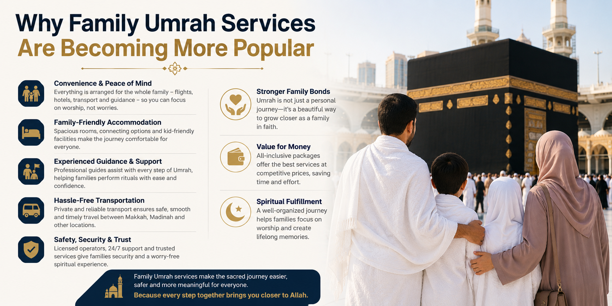

How to Plan an Affordable Umrah Journey From UAE
Learn practical tips to plan a budget-friendly and smooth Umrah journey from UAE.
Read Article →Discover useful Umrah travel tips, pilgrimage preparation advice, packing guides, and family-friendly travel information.
Explore Articles
Learn practical tips to plan a budget-friendly and smooth Umrah journey from UAE.
Read Article →
Understand how choosing the right flight timing can improve your pilgrimage comfort.
Read Article →